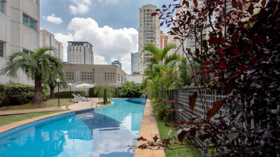
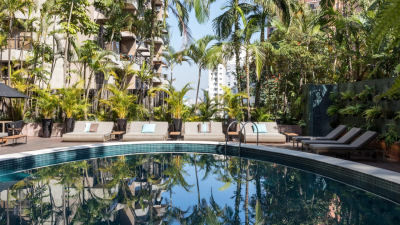

CONHEÇA SÃO PAULO

Estado que reúne um pequeno mundo em seu território, São Paulo foi construído por gente
de variadas regiões. O povo que iniciou sua história desbravando terras, acolheu migrantes e
imigrantes para se transformar em potência econômica, rica em diversidade e com um turismo
incrementado por negócios, atrações culturais, praias, Mata Atlântica e estâncias do interior.

Hilton São Paulo Morumbi
O Hilton São Paulo Morumbi oferece o melhor de São Paulo a poucos passos, além de proporcionar
uma estadia relaxante e agradável.
Av. das Nações Unidas, 12901 Torre Leste Brooklin Novo, São
Paulo

Intercity São Paulo Ibirapuera
Localizado a 500 metros do Shopping Ibirapuera e a 2 km do Parque do Ibirapuera, a maior área
verde da cidade, o Intercity São Paulo Ibirapuera oferece piscina ao ar livre, restaurante,
academia e Wi-Fi gratuito.
Av. Ibirapuera, 2577 - Moema, São Paulo

Tivoli Mofarrej São Paulo Hotel
O Tivoli Mofarrej - São Paulo, membro do The Leading Hotels of the World, oferece conforto 5
estrelas e uma localização imbatível, a 1 quarteirão da Avenida Paulista e do MASP, no bairro
dos Jardins, em São Paulo. A propriedade dispõe de um spa de luxo, 2 restaurantes gastronômicos
e um bar elegante.
Alameda Santos, 1437, Jardim Paulista, São Paulo